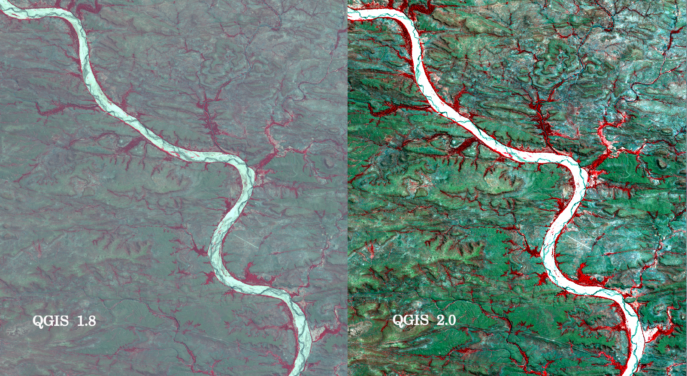
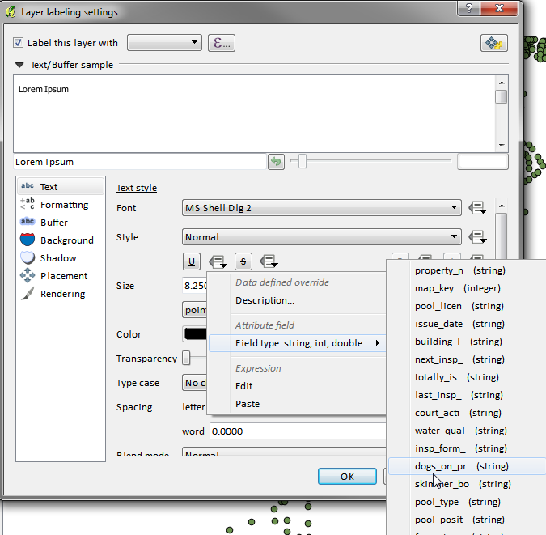
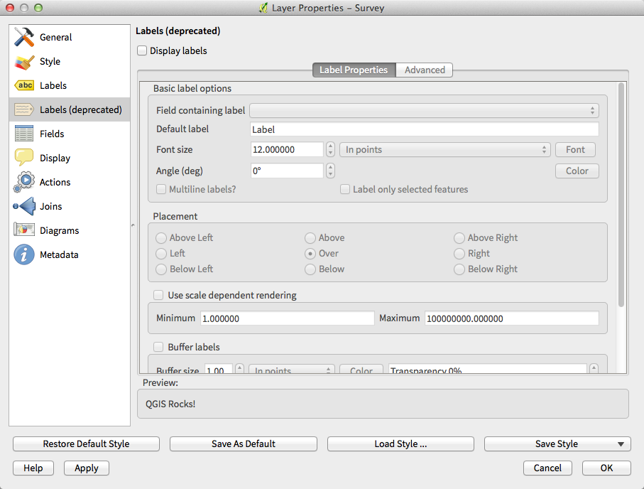
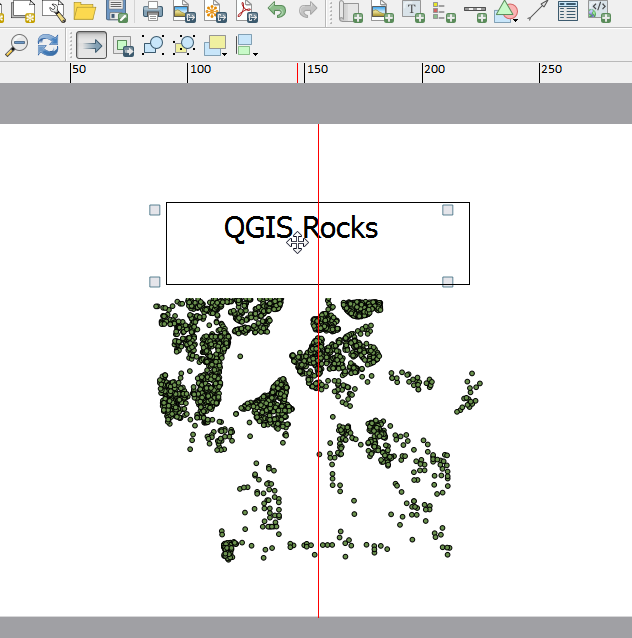
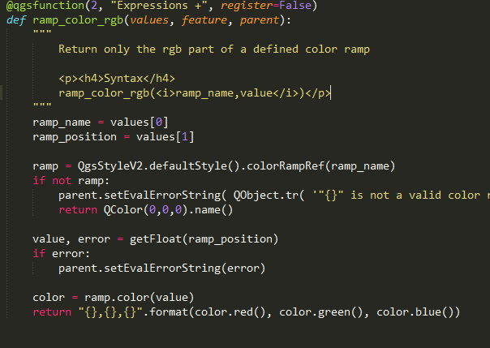
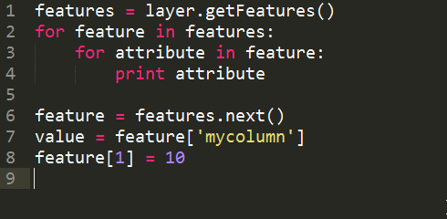
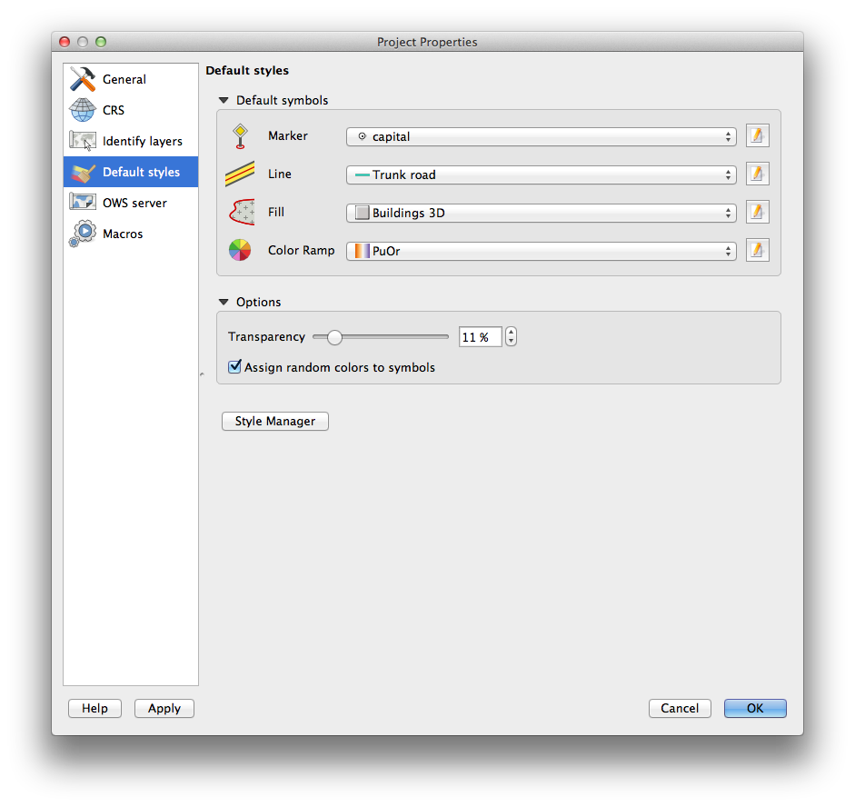

Візуальний список змін для версії 2.0¶
Інструменти аналізу¶
Processing Commander¶
Зручний інструмент для швидкого доступу до можливостей просторової обробки. Запустіть Commander (Ctrl + Alt + M) та почніть набирати назву інструмента. Commander покаже наявні варіанти та запустить вказаний. Більше не треба блукати по меню в пошуках інструментів.

Вдосконалення плаґіна «Теплокарт໶
Значно вдосконалено плаґін «Теплокарта», в результаті чого підвищилась швидкість генерації теплокарт. Крім того, з’явилась можливість вибору функції ядра для побудови теплокарти.

Інтеграція Processing¶
Бібліотека просторового аналізу SEXTANTE була адаптована та інтегрована в QGIS. В процесі адаптації її перейменували у Processing. Панель інструментів Processing має багатий функціонал та надає доступ до багатьох популярних інструментів просторового аналізу, таким як GRASS, OTB, SAGA та інші. Крім того, розвинене API дозволяє користувачам створювати власні алгоритми.

Редактор моделей Processing¶
Редактор моделей Processing дозволяє легко та швидко створювати складні алгоритми обробки та аналізу шляхом з’єднання між собою простих блоків. Створені моделі можна зберігати та використовувати повторно, а також застосовувати в якості складових у більш складних моделях.

Програма та проекти¶
Стартовий проект та шаблони проектів¶
З’явилась можливість налаштування поведінки QGIS після старту: Новий проект (за замовчанням, створювати новий проект), Останній (після запуску QGIS буде відкрито останній проект з яким ви працювали), Вказаний (завжди відкривати вказаний проект). Також можна вказати каталог шаблонів проектів, будь-який проект, збережений у цьому каталозі, може використовуватися в якості шаблону, коли створюється новий проект через .

Системні змінні оточення¶
З’явилась можливість переглядати та редагувати змінні оточення. Особливо корисною ця можливість буде на таких системах як MacOS, де графічні програми не обов’язково успадковують оточення користувача. Також може використовуватися для налаштування/перегляду змінних оточення сторонніх програм, що використовуються у бібліотеці просторового аналізу Processing (наприклад, SAGA, GRASS).

Користувацькі набори масштабів¶
Список масштабів тепер редагується на глобальному рівні та може бути перевизначений на рівні проекту. Масштаби будуть відображатися у випадаючому списку Масштаб у панелі статусу. Підтримується імпорт та експорт списку масштабів.

Оглядач¶
Вдосконалення вбудованого оглядача¶
- Можливість фільтрації каталогів за маскою або регулярним виразом
- Новий елемент
Project home(кореневий каталог поточного проекту) - Перегляд інформації про вказаний каталог
- Вибір каталогів для швидкого пошуку
- Можливість додати каталог до
Вибраногобезпосередньо з оглядача - Новий елемент
/Volumesна Mac (прихований каталог для доступу до зовнішніх накопичувачів) - Нова група
OWS(всі доступні підключення до картографічних сервісів) - Можливість відкрити другу панель оглядача () та перетягувати шари між цими панелями
- Іконки сортуються за типом елемента (файлова система, бази даних, картографічні сервіси)
- Вдосконалено вигляд діалогу властивостей шару

Провайдери даних¶
Оновлення растрового провайдера¶
Повністю перероблено растрову підсистему. Одним з результатів стала можливість збереження відкритих растрів у будь-якому форматі, що підтримується бібліотекою GDAL. В процесі збереження можна змінити роздільну здатність растру, виконати обрізку та перепроектування. Крім того, можна зберегти растр у тому вигляді, в якому він відображається у ГІС, наприклад, якщо до одноканального растру було застосовано палітру, його можна зберегти як прив’язаний RGB-растр.


Провайдер Web Coverage Service¶
У QGIS з’явилась підтримка шарів Web Coverage Service — процес додавання таких шарів нічим не відрізняється від додавання шарів WMS або WFS.
Зріз 2% для растрів за замовчанням¶
Растри часто мають велику кількість викидів, що призводить до некоректного відображення. QGIS 2.0 використовує більш гнучкий та надійний алгоритм відображення растрів, включаючи використання зрізу 2% - 98% з накопиченням за замовчанням. Нижче показано відображення одного й того ж растру в QGIS 1.8 (зліва) та QGIS 2.0 (справа) з використанням налаштувань за замовчанням.

Формат результатів визначення WMS¶
Реалізовано можливість вибору формату відображення результатів визначення об’єктів у шарах WMS, якщо така можливість надається сервером. Підтримуються наступні формати: HTML, GML та простий текст. Якщо вибрано формат GML, результат буде таким же як і при визначенні об’єктів у векторному шарі: об’єкт на карті підсвічується, а його геометрію та атрибути можна скопіювати у буфер обміну та вставити в інший шар.

Підтримка WMTS¶
Клієнт WMS у QGIS тепер підтримує WMTS (Web Mapping Tile Service), включаючи вибір вкладених наборів даних, таких як часові зрізі. Під час додавання шару з серверу ви зможете вибрати який саме часовий зріз відображати.

Загальні¶
Quantum GIS тепер просто «QGIS»¶
Слово «Quantum» у «Quantum GIS» ніколи не мало особливого значення, а одночасне використання Quantum GIS та QGIS дуже часто було джерелом плутанини. Ми вдосконалюємо проект і частиною цього процесу стала офіційна відмова від використання слова Quantum — відтепер ми відомі лише як QGIS (великими буквами). Ми оновлюємо вихідні коди та всі публічні матеріали відповідно до цієї зміни.

Підписи¶
Нова система підписування¶
Підсистема підписування була повністю оновлена — з’явилось багато нових можливостей, таких як тіні, «highway shields», параметри, залежні від даних, та підвищення продуктивності. Ми поступово відмовляємось від «старої» системи підписування, і хоча вона поки доступна, і одному з наступних випусків її буде повністю видалено.

Параметри підписів на основі виразів¶
Тепер можна використовувати всі можливості виразів QGIS для налаштування параметрів підписів. Практично всі параметри можна задавати з використанням виразів або значень атрибутів. Вирази можуть просто посилатися на поле (наприклад, встановити розмір шрифту рівний значенню поля «font») або включати більш складу логіку.
В якості прикладів можна навести наступні параметри, що підтримують вирази:
- шрифт
- розмір
- стиль
- розмір буфера

Стара система підписів не підтримується¶
Використання старої системи підписування, яка була в QGIS <= 1.8 не рекомендується, хоча вона ще не видалена. Це дозволить користувачам перевести свої проекти на використання нової системи підписування.
Порядок роботи зі старою системою підписів у QGIS 2.0:
- Стара вкладка підписів не відображається у діалозі властивостей векторного шару в нових проектах та в старих проектах, що не використовують стару підсистему.
- Стара вкладка відображається для проектів, в яких хоча б один шар використовує старі підписи, і не буде схована навіть якщо проект перевести на використання нової системи.
Стару вкладку можна включити або виключити для поточного проекту за допомогою наступних команд:
>>> QgsProject.instance().writeEntry('DeprecatedLabels', '/Enabled', True | False)
# or
>>> QgsProject.instance().removeEntry('DeprecatedLabels', '/')
УВАГА: швидше за все стара система підписів буде повністю видалена у наступному стабільному випуску QGIS. Будь ласка, оновіть свої проекти.

Список шарів¶
Нові можливості списку шарів¶
- Відображення кількості об’єктів шару, та кількості об’єктів кожного класу
- Векторні шари в режимі редагування позначаються червоним олівцем, якщо мають незбережені зміни
- Активний шар виділяється підкреслюванням
- Зняти вибір тепер можна клацнувши мишою по вільній частині легенди
- Клацання правою клавішею миші для виклику контекстного меню тепер автоматично призводить до клацанню лівою клавішею, що дозволяє використовувати одне натискання замість двох
- Імена груп та шарів можуть виділятися напівжирним
- Опціональне відключення генерації зменшених копій растрів, що в деяких випадках значно прискорює завантаження проектів

Клонування шару¶
Можливість продублювати вибраний растровий або векторний шар у легенді. Рівнозначне повторному завантаженню шару та застосуванню до нього такого ж стилю.

Редагування декількох шарів¶
Якщо вибрано декілька шарів і хоча б один з них знаходиться в режимі редагування, можна швидко зберегти або відмінити поточні зміни. Також можна виконати ці дії для всіх шарів не залежно від наявності вибору.

Редактор макетів¶


Вирази в підписах макету¶
Підписи макетів QGIS 1.8 були обмежені в підтримці виразів і дозволяли використовувати лише функцію $CURRENT_DATE. У QGIS 2.0 реалізовано повну підтримку виразів.
Підписи з виразами на зразок:
This was printed on: [% format_date( $now, 'dd.MM.yyyy')%]
будуть обчислені в процесі друку (або візуалізації) і відображені як:
This was printed on: 06.09.2013
При ввімкненій генерації атласів стають доступними і атрибути поточного об’єкту, що дозволяє створювати такі тексти:
Asset ID [% "ID" %] and the Tree Type is [% "TreeType" %]

Автоматичні направляючі¶
Запроваджено автоматичні направляючі для вирівнювання близько розміщених елементів макету.

Користувацькі направляючі¶
Іноді необхідно вирівняти елементи у певному місці макету. Нові користувацькі направляючі дозволяють додавати необхідну кількість ліній прив’язки для кращого вирівнювання елементів.

Генерація послідовностей карт¶
Редактор макетів тепер дозволяє генерувати послідовності карт (атласи). В якості шару-покриття можуть використовуватися точки, лінії, полігони, а атрибути поточного об’єкту можна використовувати у підписах.

Підтримка оглядових карт¶
Необхідно показати поточну область основної карти в вікну огляду? Тепер така можливість існує. Карта може відображати межі іншої карти та буде оновлюватися при їх зміні. Використання цієї можливості разом з функцією підготовки атласів дозволяє створювати зручні карти. Рамка оглядової карти може використовувати такі ж стилі як і звичайний полігональний об’єкт, то ж ваша творчість нічим не обмежується.

Змішування шарів¶
Змішування шарів дозволяє комбінувати їх новими, захоплюючими способами. Якщо в попередніх версіях, все що можна було зробити це задати ступінь прозорості шару, то зараз можна обирати серед більш просунутих можливостей, таких як «множення», «затемнення» та інші.
Змішування може використовуватися як на основній карті, так і в макеті. Коротка інструкція з використання змішування у редакторі макетів розміщена у дописі «Vintage map design using QGIS».

Підтримка HTML у підписах¶
Підтримка HTML у підписах дає дозволяє контролювати зовнішній вигляд карт у ще більш широких межах. Підписи отримали повну підтримку CSS, HTML і навіть JavaScript.

Багатоколоночна легенда¶
Легенда тепер підтримує відображення у декілька стовпчиків. За необхідності можна розбивати один шару з багатьма класами на декілька стовпчиків. Шари з одним класом за замовчанням додаються як один рядок. Реалізовано три способи відображення назви шару або групи: Група, Вкладена група або Сховати. Стилі заголовків дозволяють налаштовувати групування елементів. Наприклад, шар з одним класом може відображатися одним рядком або з назвою шару (як у QGIS 1.8), символи декількох шарів можна об’єднати в групу тощо. За бажанням також можна відобразити число об’єктів.

Вдосконалення в управлінні макетами¶
Внесено наступні зміни в управління макетами:
- Назву макета можна вказати на етапі створення, в тому числі вибравши в якості заготовки назву іншого макета
- Макети можна дублювати
- Пункти меню
New from TemplateтаSpecificу редакторі макетів дозволяють створити макет на основі шаблону - Можливість зберегти проект з вікна редактора макетів
- Всі операції з управління макетом тепер доступні у вінкі редактора макетів

Плагіни¶
Оновлений менеджер плаґінів¶
У QGIS 1.x управління плаґінами було дещо заплутаним через наявність двох інтерфейсів — один для управління вде встановленими плаґінами та інший для їх завантаження з репозиторія. В QGIS 2.0 ми реалізували новий, уніфікований менеджер плаґінів, який є єдиним місцем для завантаження, активації/деактивації та управління плаґінами. Крім того, інтерфейс тепер виглядає набагато краще завдяки використанню бічної панелі та нових іконок!

Програмування та розробка¶
Нова консоль Python¶
Нова консоль Python надає значно більше можливостей: підтримка автоматичного доповнення, підсвітка синтаксису, можливість налаштування шрифтів. Вбудований редактор коду з підтримкою завантаження та запуску файлів, дозволяє легко вводити великі блоки коду.

Розширений набір виразів¶
Вирази використовуються у багатьох підсистемах QGIS та дозволяють створювати підписи та символи з використанням виразів. У редакторі виразів було реалізовано багато нових функцій, і всі вони мають вбудовану довідку з прикладами використання.

Користувацькі функції¶
Необхідна функція відсутня у редакторі виразів? Жодних проблем. Нову функцію можна додати за допомогою простого Python API.

Нове Python API¶
Python API було перероблене, щоб зробити його використання більш зручним. API QGIS 2.0 використовує SIP v2, завдяки чому вдалось позбавитися ручної конвертації типів даних. Всі типи даних тепер автоматично конвертуються у відповідні типи даних Python.
>>> feature['mycolumn'] = 10
>>> feature['mycolumn']
10
Вдосконалено процес зчитування об’єктів шару, що в майбутньому дозволить реалізувати багатопоточність.
for feature in layer.getFeatures():
print feature['mycolumn']

Сумісність коду з серією 1.х¶
As this is a major release, it is not completely API compatible with previous 1.x releases. In most cases porting your code should be fairly straightforward - you can use this guide to get started. Please use the developer mailing list if you need further help.

Макроси проекту¶
Код Python, збережений у файлі проекту, може виконуватися при настанні однієї з наступних подій:
openProject()saveProject()closeProject()
Необхідність запуску макросів можна налаштувати.

Символіка¶
Перевизначення параметрів¶
Завдяки можливості перевизначення параметрів можна контролювати тип символу, його розмір, колір, повертання та інші параметри, через атрибути об’єктів.

Вдосконалення в управлінні символами¶
Нова область перегляду символу відображає структуру символу та надає швидкий доступ до всіх символьних шарів.

Підтримка прозорості у діалогах вибору кольору¶
У більшості діалогів вибору кольору QGIS з’явилась можливість вказати значення альфа-каналу. Завдяки цьому можна створювати красиві карти та легко приховати непотрібні дані.

Управління кольорами для растрів¶
QGIS 2.0 дозволяє гнучко контролювати відображення растрових шарів. Ви можете налаштовувати яскравість, контраст та насиченість. Крім того є можливість відображення растрів у відтінках сірого у відтінках іншого кольору.

Копіювання символіки між шарами¶
Відтепер дуже просто копіювати оформлення одного шару до іншого. Якщо ви працюєте з декількома схожими шарами, ви можете просто клацнути правою кнопкою миші по одному шару, вибрати Копіювати стиль, а потім клацнути правою клавішею миші на іншому шарі та вибрати Вставити стиль.

Збереження стилів у базі даних¶
Якщо ви використовуєте базу даних для збереження векторних шарів, то можете зберігати стилі у цій же базі даних. Завдяки цьому значно спрощується задача розповсюдження стилів у багатокористувацькому середовищі.

Підтримка кольорових шкал¶
Кольорові шкали використовуються у багатьох місцях символіки QGIS, а сама QGIS містить велику кількість кольорових шкал проекту cpt-city. Крім того, ви можете створити свою власну кольорову шкалу. Всі кольорові шкали підтримують прозорість.

Стилі за замовчанням¶
Відтепер QGIS дозволяє контролювати як будуть відображатися нові шари, якщо вони не мають відповідного стилю. Також можна встановити ступінь прозорості шарів за замовчанням та необхідність використання випадкових кольорів.

Графічний інтерфейс¶

Бічні панелі та групи, що згортаються¶
Ми стандартизували зовнішній вигляд вкладок та почали використовувати групи елементів, що згортаються. Завдяки цьому навігація по настройкам стала більш простою, а використання площі екрана — оптимальним.

Спливаючі повідомлення¶
У багатьох випадках ми хочемо повідомити щось, але не хочемо зупиняти вашу роботу. Нова система повідомлень QGIS дозволяє відображати важливу інформацію на панелі повідомлень, яка з’являється у верхній частині вікна і не потребує вашої реакції на неї, якщо ви зайняти чимось іншим. Розробники можуть створювати такі повідомлення за допомогою Python API.

Користувацький шрифт і таблиці стилів Qt¶
З’явилась можливість задати шрифт, що буде використовуватися в інтерфейсі. Будь-який плаґін на C++ або Python, тепер копіює та використовує таблицю стилів QGIS, що дозволяє уникнути проблем з відображенням спеціальних віджетів QGIS, наприклад QgsCollapsibleGroupBox.
Таблицю стилів QGIS можна отримати за допомогою наступної команди:
qgis.utils.iface.mainWindow().styleSheet()

Нові діалоги вибору кольору¶
Всі кнопки вибору кольору було оновлено для відображення використання альфа-каналу. В якості діалогів вибору кольору тепер використовуються системні діалоги. Якщо активовано настройку Use live-updating color chooser dialogs, то будь-які зміни кольору будуть відображатися на відповідних елементах.

SVG-анотації¶
QGIS 2.0 дозволяє додавати на карту анотації в форматі SVG — прив’язані до вказаної точки або з відносним положенням.

Інтерактивний редактор форм¶
QGIS 2.0 дозволяє створювати форми вводу даних. Завдяки редактору форм можна створити форму з вкладками та групами полів.

Інструмент дія за замовчанням¶
Якщо ви використовуєте «дії» векторних шарів (маленькі задачі, що виконуються, коли ви клацаєте на об’єкті), вам сподобається новий інструмент. Він дозволяє вказати дію за замовчанням та виконувати її просто клацнувши на об’єкті.